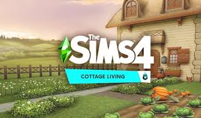

My favorite pack is Cottage Living. This pack will add a large amount of gameplay to your game. Some new features it comes with is a new world called Henford On Bagdley, and of course FARM ANIMALS. With this pack you can now play with cute chickens, cows, and llamas, and your Sims can plant as many crops as their pixel hearts desire.
This pack also adds some new lot challenges. The Simple Living lot challenge only allows your Sims to cook meals if they have acquired the ingredients. The other challenge is the Wild Foxes lot challenge, this one enables wild foxes to appear on a lot and cause harm to farm animals and crops.Bonus Feature: This pack may or may not come with a new death! All i'll say is make sure your Sim does not piss off any wild rabbits or chickens!
